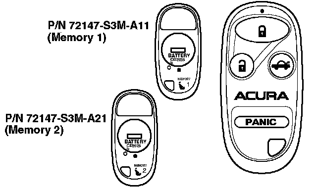

2001 3.2CL
2001 3.2CL with factory-installed security system
These transmitters are integrated into the Driver's Position Memory System. When the doors are unlocked with the remote transmitter, memory 1 or memory 2 in the DPMS is activated, depending on the transmitter used. When the driver's door is opened, the seat and mirrors move to the positions stored in the activated memory.
DPMS activation can be turned off and on. Press and hold the "LOCK" and "UNLOCK" buttons at the same time. The LED blinks twice to show that the feature has been turned oft. Repeating this procedure, the LED comes on for 1 second to show that the feature has been turned on.
Programming the Transmitter
NOTES:
^ This system accepts up to three transmitters. The transmitter codes are stored in a stacking-type memory. If a fourth transmitter code is programmed, the code for the first transmitter will be erased.
^ Entering the programming mode cancels all learned transmitter codes, so none of the previously programmed transmitters will work. You must reprogram all of the transmitters once you are in the programming mode.
1. Turn the ignition switch to ON (II).
2. Within 4 seconds, press the "LOCK" or "UNLOCK" button on the transmitter. Make sure the transmitter is aimed at the receiver above the glove box.
3. Within 4 seconds, turn the ignition switch to LOCK (0).
4. Repeat steps 1, 2, and 3 two more times. Use the same transmitter used in step 2.
5. Within 4 seconds, turn the ignition switch to ON (II).
6. Within 4 seconds, press the "LOCK" or "UNLOCK" button on the same transmitter. Make sure the power door locks cycle to confirm that the system is in programming mode. Press the "LOCK" or "UNLOCK" button again.
7. Press the "LOCK" or "UNLOCK" button on each transmitter you want to program. Make sure the power door locks cycle after you push each transmitter button to confirm that the system accepted the transmitter's code.
8. Turn the ignition switch to LOCK (0) to exit the programming mode.
Ordering a Transmitter
Transmitters can be ordered only by authorized Acura dealers. Order them from American Honda using normal parts ordering procedures.
Batteries for the Transmitter
The battery number is CR2025. Each transmitter uses one battery.